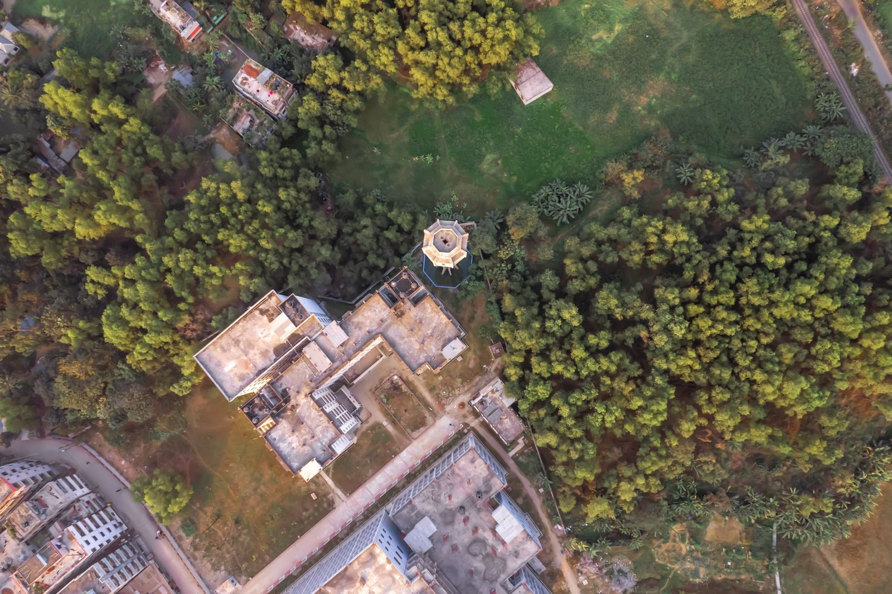

Services
Consultancy for industry, spatial and water analysis, and training and support for researchers.
For industries and project developers
ETP design
We design effluent treatment plants that fit your factory's actual wastewater and space, and that your operators can run day to day.
- Wastewater characterisation and flow estimation
- Treatment process selection and sizing
- Layout, process drawings and design report
- Check against Department of Environment discharge standards
- Guidance on operation and monitoring
IEE and EIA reports
We prepare the environmental study your project needs for clearance, from the first screening to the final report. Which study applies depends on the category the Department of Environment gives the project.
- Screening and scoping
- Baseline environmental and social data
- Impact assessment and mitigation measures
- Environmental management and monitoring plan
- Report prepared for submission
Environmental Management Plan (EMP)
An EMP turns the findings of an IEE or EIA into actions that site teams can follow.
- Mitigation measures for each identified impact
- Roles, schedule and cost of the measures
- Monitoring indicators and reporting
- Plan prepared to accompany the IEE or EIA report
Environmental compliance and clearance support
We help operators understand what applies to their site and prepare what the authority will ask for.
- Check which clearance category applies
- Prepare and review application documents
- Compliance gap review against requirements
- Support when preparing for inspections and renewals
Feasibility studies
Before money is committed, we test whether the site, process and environmental conditions support the project.
- Site and process review
- Environmental constraints and risks
- Comparison of options
- A clear recommendation you can take to your board or donor
Environmental monitoring and baseline survey
We plan the sampling and analyse the results, working with laboratories where tests are needed.
- Site survey and sampling plan
- Baselines for water, air, soil and noise
- Data analysis and interpretation
- Baseline chapter for an IEE or EIA report
Waste management and air emission advisory
Advice for operators who want to handle waste better and bring emissions down.
- Waste review and handling plan
- Emission sources and control options
- Improvement roadmap with priorities
- Support with compliance reporting
Mapping, modelling and climate

GIS, remote sensing and mapping
Maps and spatial analysis that stand up in a report, built from open and project data.
- Land use and land cover mapping
- Flood, drought and vulnerability mapping
- Site suitability analysis
- Satellite image processing
- Statistical analysis, charts and report-ready map layouts
Hydrological modelling
Hydrological modelling for water resource and climate studies, delivered as results you can interpret and use.
- Model set-up, calibration and checking
- Rainfall, runoff and water balance analysis
- Clear reporting of assumptions and limits
Climate, carbon and ESG reporting
Support for organisations that need to measure their footprint and report on it clearly.
- Greenhouse gas inventory
- Climate and hazard risk screening
- Drafting of sustainability and ESG reports
- Data collection templates for your team
Training and research support
GIS and remote sensing training
Our GIS and RS Certification Course has run for six batches, online and on campus. We also train hydrological modelling.
- Online or on-campus delivery
- Hands-on practice, flexible schedule
- Certificates awarded by BlueGreen based on attendance
Thesis and publication support
Guidance for BSc and MSc students from choosing a topic to defending the thesis, and for researchers who want their papers published.
- Topic selection and research design
- Methods and data analysis
- Writing, editing and figure preparation
- Journal selection, submission and responding to reviewers
How a project runs
Brief
You tell us what the project is and what you need to show.
Proposal
We send a scope, timeline and fee for your approval.
Data and fieldwork
We collect or receive the data and visit the site where needed.
Analysis and design
We run the analysis or prepare the design.
Report and submission
You get the report, and we support submission.
Follow-up
We answer questions from reviewers, inspectors or your team.
Need something not listed?
If your work involves environment, water or GIS, describe it and we will tell you how we can help.